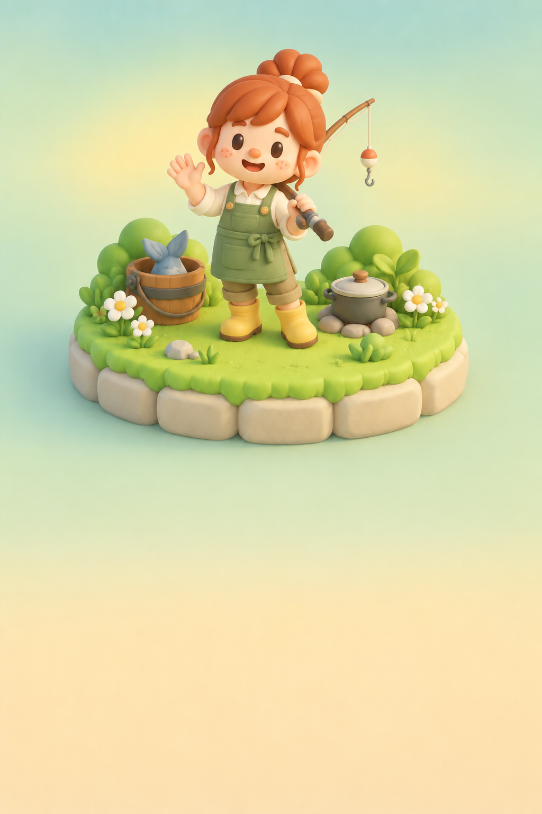

Mia
···
Mia
Line Cook
Shanghai
· Subtropical
Since Sep 28
Mutual
“Pond at dawn, stove at dusk.”
Visit farm
Send a gift
Following
Close Friend · 1 more visit this week · 2/3
Skills
Farming
Lv5
Fishing
Lv3
Cooking
Lv6
Mia's farm
Mia's Homestead
Lv5
Open to
Friends only
Guestbook ·
14
notes
3
plots need water
Collections
Fish
14
/20
Fish-dex
Pages
12
/48
Cookbook
Crops
7
/20
Crop-dex
Cities
4
/10
Passport
safe top 120
safe bottom 100